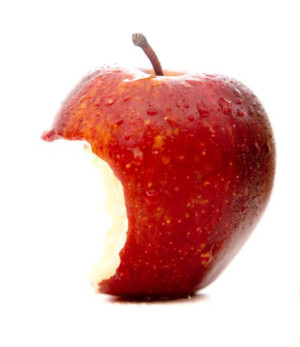

Чому клітковина в раціоні – це справді важливо?
Як не дивно, єдиного визначення клітковини наразі немає. Різні джерела і дослідники вкладають в це слово різну суть. Іншою популярною назвою є "дієтичні волокна", як переклад із західних джерел (diet fiber). Якщо спрощено для нас, споживачів, клітковина, або ж дієтичні волокна – це ті рослинні полісахариди, які ми, люди, не можемо перетравити, бо не маємо відповідних ферментів. Хіміки педантично додали б ремарку, що це полісахариди із кількістю цукрів 10 і більше у ланцюзі. Однак на етикетках харчових продуктів у розділ "клітковина" включають також і олігосахариди, які мають до 10 залишків цукру у ланцюзі.
Отож по порядку. Першими згадками про важливість клітковини в раціоні можна вважати спостереження Гіппократа: "при споживанні цільнозернового хлібу кількість фекалій є більшою, ніж при споживанні хлібу із рафінованого борошна" – таким чином наголошуючи на важливості "відходів" виробництва борошна для профілактики закрепів.
Через майже дві тисячі років за те все взялися хіміки і прокласифікували як клітковину, все те, що залишається від рослинки в пробірці після дії розчинів кислот та лугів. Також навели тааку розгорнуту клаксифікацію, що очі не можуть "нарадіти"! Бажаючих насолодитися сповна – запрошуємо сюди або сюди.
Ми ж обмежимося тим, що розрізняють так звану розчинну і нерозчиннуклітковину.
Вони відрізняються насамперед власне своєю здатністю розчинятися чи не розчинятися у воді, і відповідно – деякими ефектами при їх споживанні.
Класичними прикладами розчинноїклітковини є пектин, камеді (ні, це не про квартал), слиз. Перші дві назви Ви точно бачили в складі яких-небуть десертів (гуарова камедь). Разом із водою пектин чи камедь утворюють такі собі драглі і використовуються у виробництві харчових продуктів як загусники. До речі, також продають таке і як БАДи, але вже трохи за іншою ціною. А приклад розчинної клітковини – слизу можуть спостерігати любителі насіння льону.
Розчинна клітковина не перетравлюється нашими ферментами, але охоче споживається бактеріями нашого кишківника.
Нерозчинна клітковина найчастіше представлена целюлозою, геміцелюлозою, лігніном. Вона не розчиняється у воді, не утворює гелю, як розчинна, а також не перетравлюється більшістю наших мікроорганізмів. А от, наприклад, мікробіота термітів вміє розщеплювати целюлозу – і для себе, і для своїх прудких господарів, що дозволяє цим комахам так хвацько трощити деревину. Тому "дисбіоз" для термітів – то загроза голодної смерті.
Вона працює
Гіппократ справді був правий, клітковина рятує нас від закрепів. Організм ретельно все намагається витягнути із спожитої їжі, натомість скидаючи в кишківник деякі продукти обміну. І щоб вони звідтіля успішно виводилися потрібен носій. Таким носієм і є клітковина – ота сама нерозчинна. Окрім того, вона слугує таким собі тренажером для стінок нашого кишківника, підтримуючи його тонус та ... здійснюючи профілактику утворення дивертикул . Це такі кишені, які можуть з'являтися у кишківнику, і згодом закупорюватися та запалюватися. За статистикою близько половини людей за 60 вже мають в кишківниках дивертикули, із них в 10-25% розвивається неприємний і небезпечний для життя дивертикуліт. Однак наведена статика стосується "прогресивного західного суспільства", яке бачить клітковину частіше в баночках з БАДами, а не на обідньому столі. Серед жителів країн Африки та Азії дивертикули зустрічаються у менше 1 % населення.
Як би там не було, останні метааналізи на цю тему стверджують, що споживання 30 г клітковини на день на 40% знижує шанси заробити собі лабіринти в кишківнику.
Споживання клітковини також сприяє відчуттю ситості, адже воно формується далеко не лише зростанням рівня глюкози в крові, а й, наприклад, ступенем розтягнутості шлунку. Саме тому при постійному переїданні нам важко наїстися меншою порцією (спокійно – до певної міри цей процес зворотній). Клітковина ж технічно – надає їжі об'єму та "переконує" стінки нашого шлунку, що ми вже ситі. Ну і цілком очікувано, що клітковина в раціоні є чудовою профілактикою зайвої ваги.
Споживання клітковини с прияє зниженню рівня холестерину. І відбувається це, як мінімум, у три способи. По-перше, будучи ефективним сорбентом, вона просто вбирає в себе частину нутрієнтів і це дуже важливо, коли їх в надлишку. Тому й рекомендовано уникати надто жирної їжі, а якщо вже її споживати, то з гарною порцією салату. По-друге, за рахунок тієї ж сорбційної здатності клітковина зменшує реабсорбцію жовчних кислот із кишківника, таким чином змушуючи нас синтезувати їх заново та використовувати на це запаси холестерину, який би за інших обставин плавав би в нашій крові. А, по-третє, наша мікробіота за наявності клітковини синтезує коротколанцюгові жирні кислоти (short chain fatty acids SCFA), які потрапляють в кровоток та знижують синтез холестерину у печінці.
Ну і, звісно, про мікробіоту: розчинна клітковина та олігосахариди – відмінний харч для наших бактерій , а саме для тих їх видів, які є для нас дружніми. Споживання клітковини асоційовано із збільшенням різноманіття кишкового мікробіому, а це, в свою чергу, впливає на його стабільність в буремні часи прийому антибіотиків чи дії стресу.
Також показано, що низький ступінь різноманіття кишкової мікробіоти корелював із вищим індексом маси тіла та запальними процесами у кишківнику.
Як ми вже писали раніше, вже згадані вище SCFA є харчем для епітеліальних клітин кишківника , а також сигнальними молекулами для ентероепітеліальних клітин, які синтезують нам "гормони щастя ". Також ці SCFA впливають на т-клітинну ланку нашої імунної системи та проявляють таким чином протизапальну дію на місцевому рівні.
Всі ці численні ефекти справді дозволяють говорити про отой весь рослинний жмих як про панацею місцевого масштабу – тут тобі і профілактика серцево-судинних захворювань , і кишкових недуг , ще й настрій покращується.
Тепер про практичне: скільки і чого їсти?
- Овочі-фрукти-зелень-цільнозернові – побільше.
- Не варто зациклюватися на розчинній-нерозчинній клітковині. Як одна, так і інша потрібні нам однаковою мірою.
- Помірна термічна обробка не "вбиває" клітковину, однак іноді змінює співвідношення розчинної та нерозчинної на користь першої. Справедливо сказати, що розчинна клітковина частково йде у водний розчин при варінні. Це не так страшно, якщо Ви варите борщ, але якщо відварюєте овочі і воду зливаєте, то приготування на парі – саме воно.
- Про клітковину "з баночок": якщо обирати між відсутністю клітковини в раціоні та "баночкою" – звісно ліпше хоч щось. Але натомість споживання саме продуктів харчування, що містять клітковину – це не лише збалансованіше та набагато дешевше, а й також джерело інших цінних нутрієнтів - білків, жирів, вітамінів та мікроелементів.
- Рекомендовані норми вживання клітковини близько 25 г на добу (виходячи із раціону 2000 ккал). Для прикладу, одне яблуко, банан, апельсин чи морквина містять 2-4 г клітковини залежно від розміру. Таблиці із вмістом клітковини в різних продуктах – тут і тут.
Вітаємо, Ви це дочитали! А зараз "зроби паузу – з'їж ..." яблучко! :)
